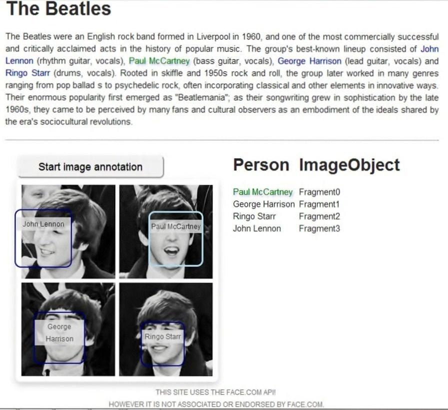

Personage is a VIE widget that enhances content with image annotation. It creates entities of "MediaObject" type for an image and its fragments. As a result, a user can establish a semantic connection between entities in textual content and their corresponding images.
Example:
"The Beatles" article below contains four entities in the text: John Lennon, Paul McCartney, George Harrison and Ringo Starr. By dragging and dropping the entity from the text on its corresponding tag in the image, a user created a semantic connection between the entities in the text and corresponding image entities. This can be seen, for instance, when a user selects a photo of Paul McCartney, then the widget recognizes the existing connection and highlights the entity "Paul McCartney" in the text.
How To
First, we need to include the dependencies in the header:
...
<script type="text/javascript" src=".../jquery.js"></script>
<script type="text/javascript" src=".../underscore.js"></script>
<script type="text/javascript" src=".../backbone.js"></script>
<script type="text/javascript" src=".../jquery.rdfquery.js"></script>
<script type="text/javascript" src=".../vie-2.0.0.js"></script>
<script type="text/javascript" src=".../jquery-ui.js"></script>
<!-- the current VIE widget -->
<script type="text/javascript" src="./vie.widget.personage.js"></script>
...
Initialization
Options:
Required:
- FACE_API_KEY and FACE_API_SECRET - these are API key and API secret values that are necessary to get web service from www.face.com
- myVIE - the VIE instance
Optional:
- done - a callback function, which is called after creation of the image annotating entities.
- draggable - an option (array) that makes annotated entities in text draggable. It is given as an array with entity types, for example: ['Person', 'Place']. If the option is undefined, then by default all annotated entities become draggable. Default setting is "undefined".
- highlight - an option (boolean) that activates highlighting between semantically connected entities. If set to "true", then highlighting is activated, "false" - deactivated. Default setting is "true".
Example:
In order to initialize the widget, call the widget on a jQuery selector that contains all images that need to be annotated.
$('#photos').viePersonage({
FACE_API_KEY: "abcderrtyew",
FACE_API_SECRET: "1234asd",
myVIE: myVIE
});
function imageResults(entities){
for(var f = 0; f < entities.length; f++) {
var fragment_entity = entities[f];
console.log(fragment_entity);
}
}